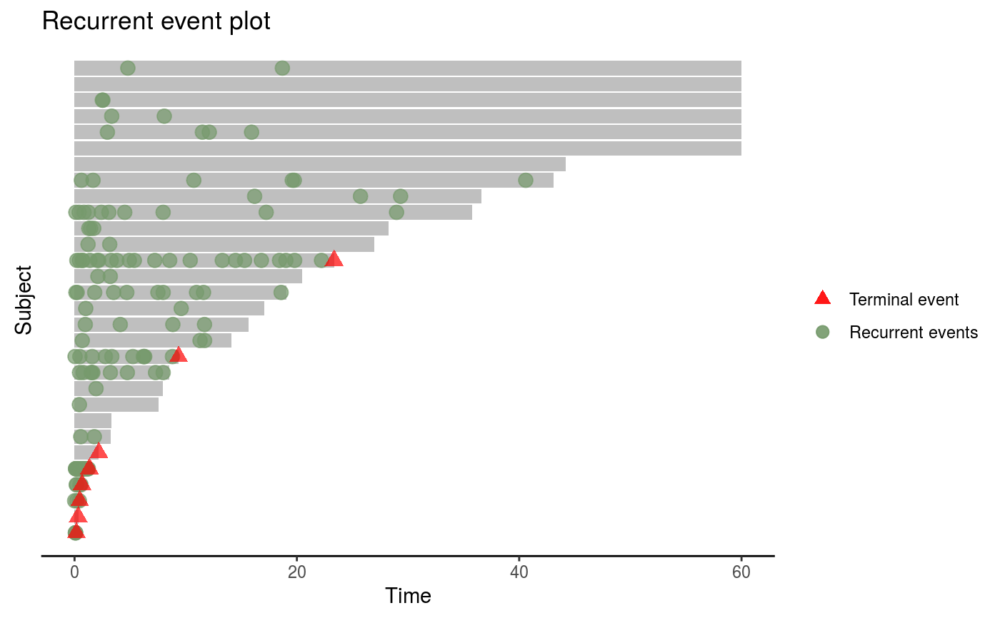
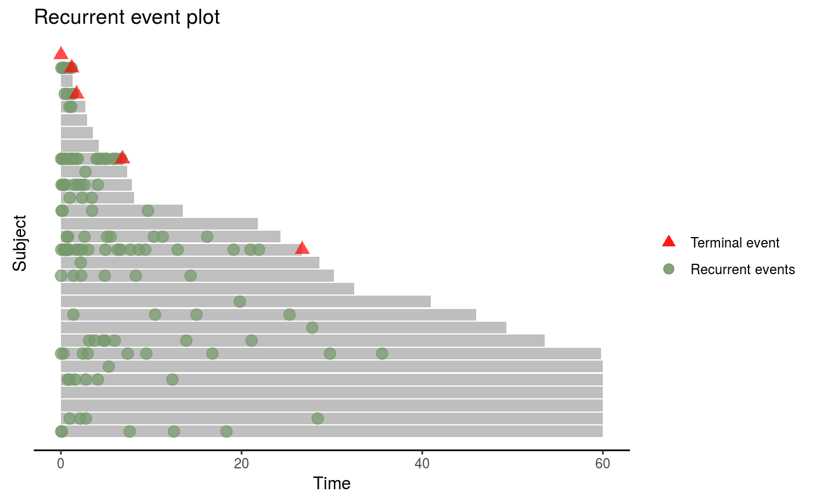
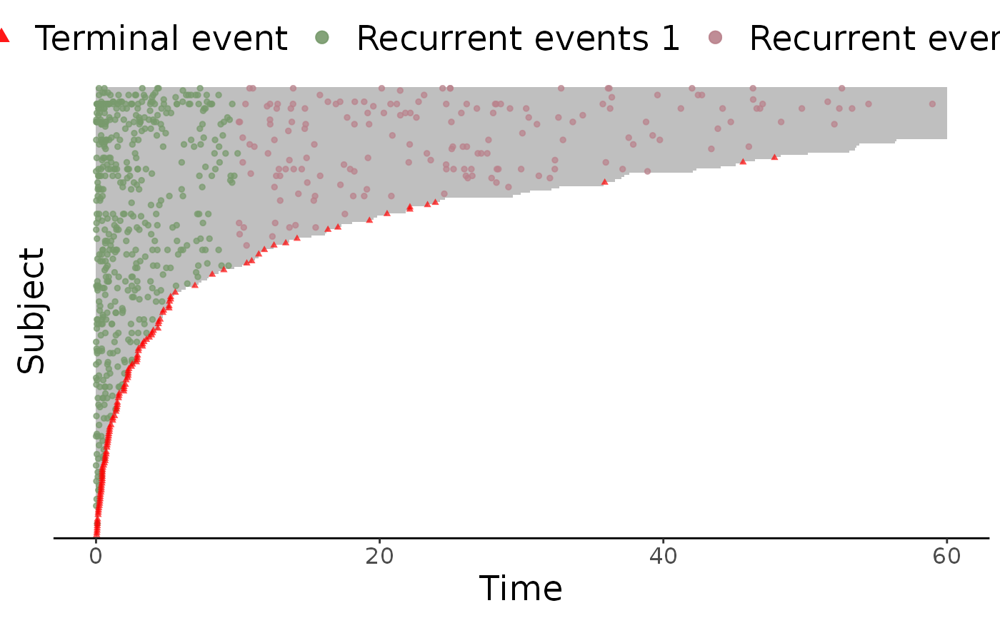
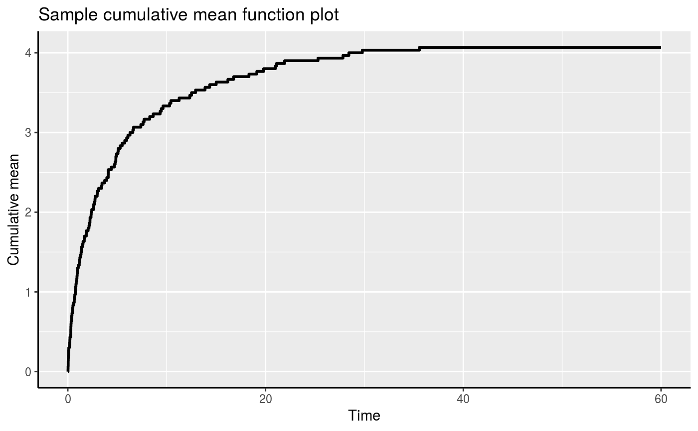
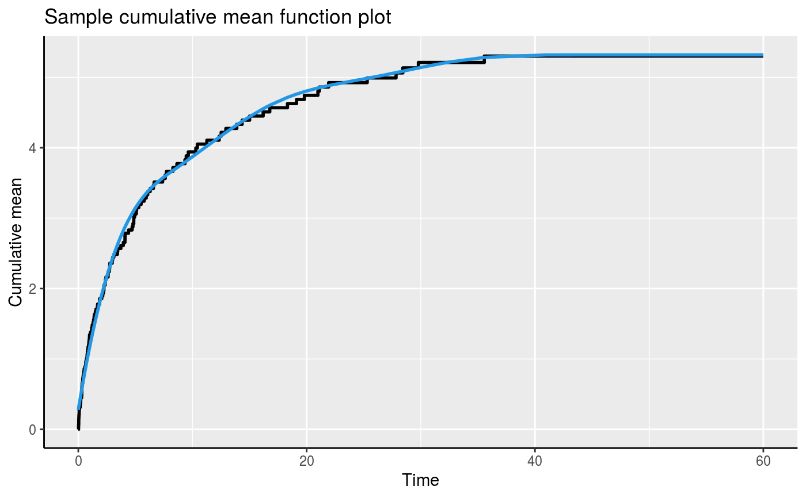
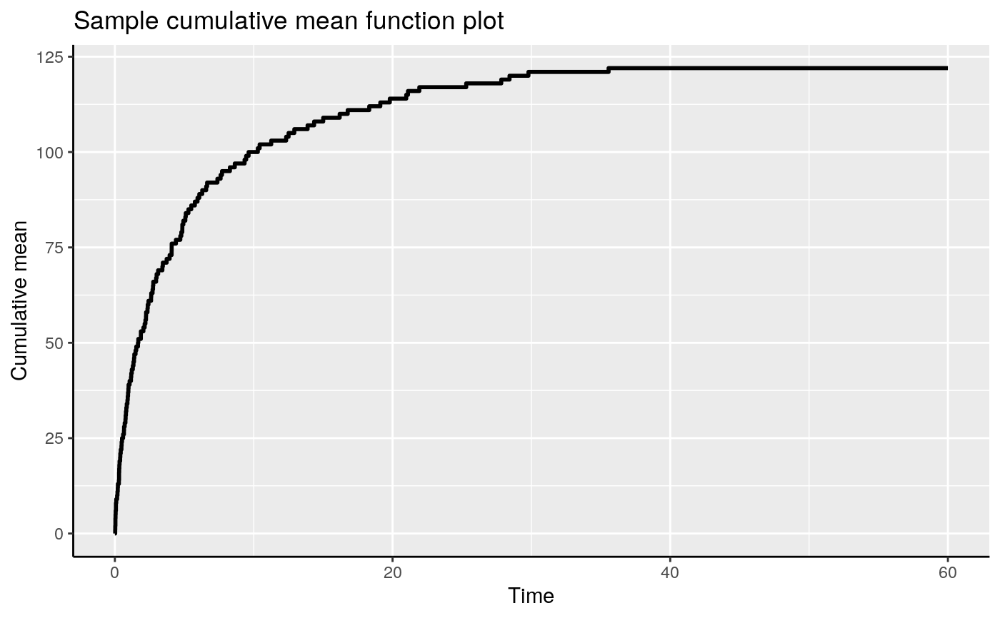

Plot the event plot or the mean cumulative function (MCF) from an Recur object.
# S3 method for Recur plot( x, mcf = FALSE, event.result = c("increasing", "decreasing", "asis"), event.calendarTime = FALSE, mcf.adjustRiskset = TRUE, mcf.conf.int = FALSE, control = list(), ... )
| x | an object of class |
|---|---|
| mcf | an optional logical value indicating whether the mean cumulative function (MCF) will
be plotted instead of the event plot. When |
| event.result | an optional character string that is passed to the
|
| event.calendarTime | an optional logical value indicating whether to plot in calendar time.
When |
| mcf.adjustRiskset | an optional logical value that is passed to
the |
| mcf.conf.int | an optional logical value that is passed to
the |
| control | a list of control parameters. See Details. |
| ... | additional graphical parameters to be passed to methods. |
A ggplot object.
The argument control consists of options with argument defaults to a list with
the following values:
customizable x-label, default value is "Time".
customizable y-label, default value is "Subject" for event plot and "Cumulative mean" for MCF plot.
customizable title, the default value is "Recurrent event plot"
when mcf = FALSE and
"Sample cumulative mean function plot" when mcf = TRUE.
customizable label for terminal event, the default value is "Terminal event".
customizable legend title for recurrent event, the default value is "Recurrent events".
customizable label for recurrent event type,
the default value is NULL.
between 0 and 1, controls the transparency of points.
The xlab, ylab and main parameters can be specified
outside of the control list.
Nelson, W. B. (1995) Confidence Limits for Recurrence Data-Applied to Cost or Number of Product Repairs. Technometrics, 37(2): 147--157.
data(simDat) reObj <- with(simDat, Recur(t.start %to% t.stop, id, event, status)) ## Event plots: plot(reObj)## With (hypothetical) multiple event types simDat$event2 <- with(simDat, ifelse(t.stop > 10 & event > 0, 2, event)) reObj2 <- with(simDat, Recur(t.start %to% t.stop, id, event2, status)) plot(reObj2)## With (hypothetical) calendar times simDat2 <- simDat simDat2$t.start <- as.Date(simDat2$t.start + simDat2$x2 * 5, origin = "20-01-01") simDat2$t.stop <- as.Date(simDat2$t.stop + simDat2$x2 * 5, origin = "20-01-01") reObj3 <- with(simDat2, Recur(t.start %to% t.stop, id, event, status)) plot(reObj3, event.calendarTime = TRUE)